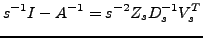
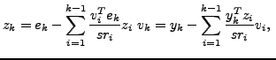
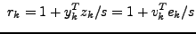
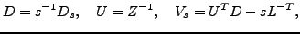

The Inverse Sherman-Morrison factorization of an
invertible matrix  , for a positive parameter
, for a positive parameter  , is given by
, is given by
|  |
|  and |
It is known that from this factorization some factors of the LDU factorization can be recovered, at the same time the inverse factors of the LDU factorization are already computed, as can be deduced from the following relations
|  |
Since the ISM factorization is
highly parametrizable we analyze also some relations of the factors for
different choices of the parameter  , and relations with scaling of
, and relations with scaling of  .
.
We also present an algorithm (NBIF) to compute a preconditioner using the ISM factorization and the dropping strategies of Bollhöfer, taking advantage of more deep relations between both factorizations. We also prove existence properties of these preconditioners and present some numerical results.